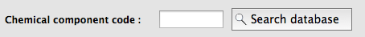
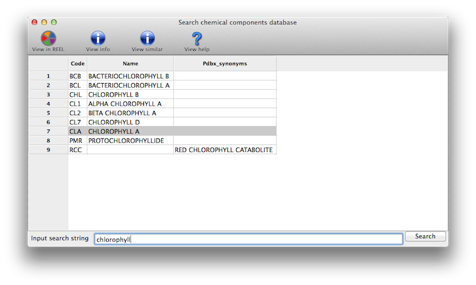
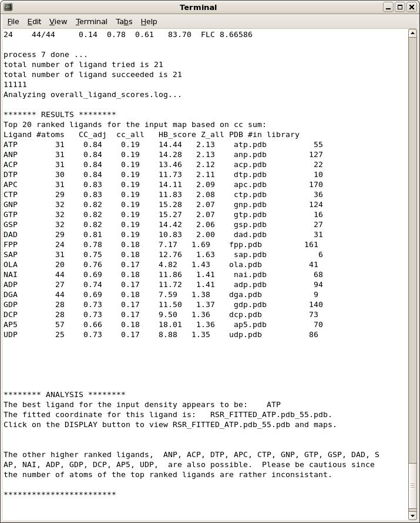
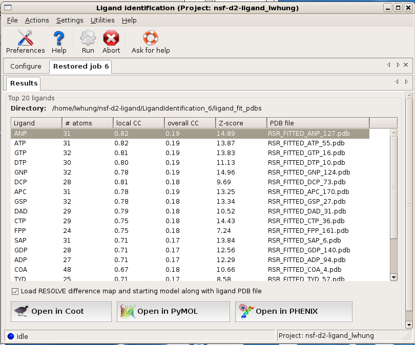

What score indicates an acceptable fit to density?
When using an Fo-Fc difference map as the target, a correlation coefficient (CC) of 0.7 or better usually indicates that the ligand is at least partially correct (with some variation due to differences in data quality or minor inaccuracies in conformation). Values significantly higher than 0.7 almost always indicate an excellent fit to density. A value between 0.6 and 0.7 may not be entirely wrong, but should be treated with suspicion. CC below 0.6 usually means that the ligand is misplaced (which often means that no suitable density could be found). Regardless of the CC, you should always inspect the output model and maps carefully before and after further refinement to evaluate whether the ligand placement is accurate.
Can LigandFit place a peptide for me?
LigandFit works well for single amino acids and may work for small peptides (2-3 residues), but it is not designed to handle larger peptides, which have too many degrees of freedom. You can use AutoBuild to build additional peptides (covered in the model-building FAQs but this will be significantly slower.
What can I do if ligandfit says "this version does not seem big enough"?
Ligandfit tries to automatically determine the size of solve or resolve, but if your data is very high resolution or a very large unit cell, you can get the message:
*************************************************** Sorry, this version does not seem big enough... (Current value of isizeit is 30) Unfortunately your computer will only accept a size of 30 with your current settings. You might try cutting back the resolution You might try "coarse_grid" to reduce memory You might try "unlimit" allow full use of memory ***************************************************
You cannot get rid of this problem by specifying the resolution with resolution=4.0 because ligandfit use the resolution cutoff you specify in all calculations, but the high-res data is still carried along.
The easiest solution to this problem is to edit your data file to have lower- resolution data. You can do it like this:
phenix.reflection_file_converter huge.sca --sca=big.sca --resolution=4.0
or in the GUI, use the reflection file editor.
A second solution is to tell ligandfit to ignore the high-res data explicitly with one of these commands (on the command line or in the GUI):
resolve_command="'resolution 200 4.0'" solve_command="'resolution 200 4.0'" resolve_pattern_command="'resolution 200 4.0'"
Note the two sets of quotes; both are required for this command-line input. Just one set of quotes is required in the GUI. These commands are applied after all other inputs in resolve/solve/resolve_pattern and therefore all data outside these limits will be ignored.
Why is the output geometry incorrect?
With the exception of some especially complex ligands, this problem is almost always caused by the use of a PDB file alone as input (especially when no hydrogens or CONECT records are present). Because the PDB format does not specify the molecular topology unambiguously, it must be guessed based on the coordinates, which is especially error-prone. You should always use a more explicit source of information on the chemistry of your molecule; this does not need to include coordinates (for instance, a SMILES string is appropriate), but it should specify the exact bonding.
I'm using a detailed source of chemical topology, but I'm still getting bad output geometry. How can I fix this?
There are several options:
- specify starting geometry for optimization: if you started with a SMILES string, this may provide a more accurate initial estimate than eLBOW is able to guess.
- use AM1 optimization: AM1 is a semi-empirical quantum-chemistry method included in eLBOW, and is often more robust than the default optimization (at the cost of longer runtime).
- use Mogul to retrieve ideal geometries from the CCSD: this option searches the large database of small molecule crystal structures for similar geometries (determined at very high resolution). Requires a license for CCSD use and separate installation of the software.
- optimize with an external quantum chemistry program: eLBOW supports running several popular commercial and academic packages including GAMESS, GAUSSIAN, and Jaguar. (You will need to have these installed separately.)
- specify explicit output geometry: if you already have accurate geometry from a small-molecule crystal structure of a computational chemistry program and just want Phenix-compatible restraints, you can specify a PDB file containing the exact geometry to use.
If you encounter especially problematic ligands, we are interested in examining these, as they occasionally expose bugs. You can email us confidentially at help@phenix-online.org.
I know the chemical name of my molecule, but I don't know what residue name has been assigned in the PDB. How do I find this out?
In the eLBOW interface, if you choose to use the PDB Chemical Component Database code to retrieve the molecular structure, you can click a button next to this input field to search the local copy of the database for chemical names matching the search terms.

This will give you a list to choose from (including three-letter codes):

What do I expect after a ligand identification run?
On the main GUI status page or towards the end of the command-line output, you will see a list of ligand ranked by scores, and a summary analysis of the results. A typical output is shown below.

Occasionally, if none of the candidate ligands in the library can fit the electron density well enough, especially when the density is much smaller than the ligands to be tested, the program will return an empty list.
OK, I see the output and the list of top ranked ligands. Now what?
The program ranks the fitting results based on objective analysis of several parameters (see document). This usually works well but one should check a few top-ranked ligands in graphics to give the final verdict. The easiest way to do this is to select (highlight) a ligand on the Results page in the GUI and click on one of the display options provided. By default, the fitted ligand, the difference map, and the protein model will be displayed together so you can check if the ligand indeed fits the density well and if it's making good contacts with the protein molecule.

Before displaying the results in graphics, is there a way to know if the program finds anything interesting?
A decent fit usually has a local correlation coefficient (local CC) greater than 0.75. A local CC close to 0.85 usually indicates a near perfect fit. If local CC of a few top-ranked ligands are 0.80 or above, you should be able to get a pretty good idea about what the density might be.
I didn't get an output list. What's the problem?
As said before, this is usually due to that none of the ligands in the library can fit the electron density well enough, especially when the density is much smaller than the ligands to be tested. If your density is the size of just a few atoms, ligand_identification is probably not the right tool for you. If this is not the case, try to use a different ligand library may help. See answer to next question.
What ligand library should I use?
The default library is the collection of the top 180 most popular ligands in the PDB. It covers a wide range of molecules in terms of their sizes and chemical nature. Very often, top ranked ligands give you good ideas about the class of ligands and what to try next. Alternatively, one may want to try ligands based on the biological functions of the protein in the crystal. Ligand_identification provides several build-in tools to do it on-the-fly. If you know your proteins function in Enzyme Classification (E.C.) terms, E.C. numbers, or Gene Ontology IDs, you can input these information in the run and Ligand_identification will compile and use this function-related ligand library for you. For command-line users, you can find a few examples in Ligand_identification document.
I think I find a ligand that's close enough, what to do next?
Try to add the ligand into refinement and see what happens.